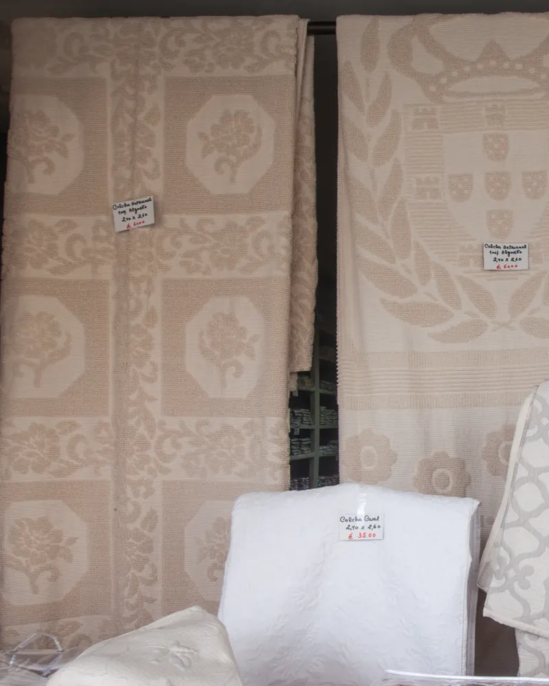
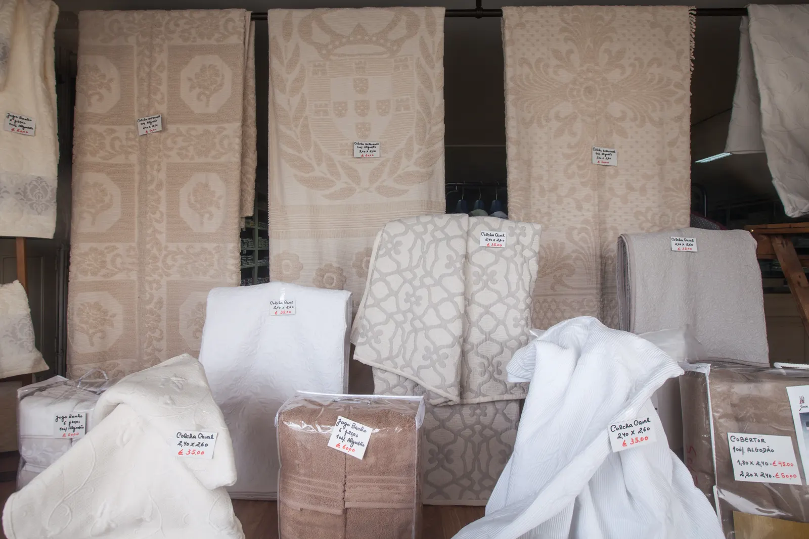
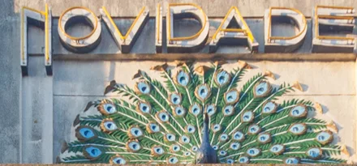
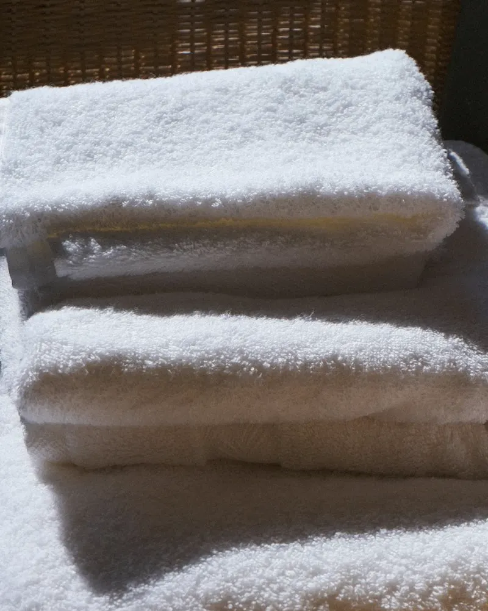
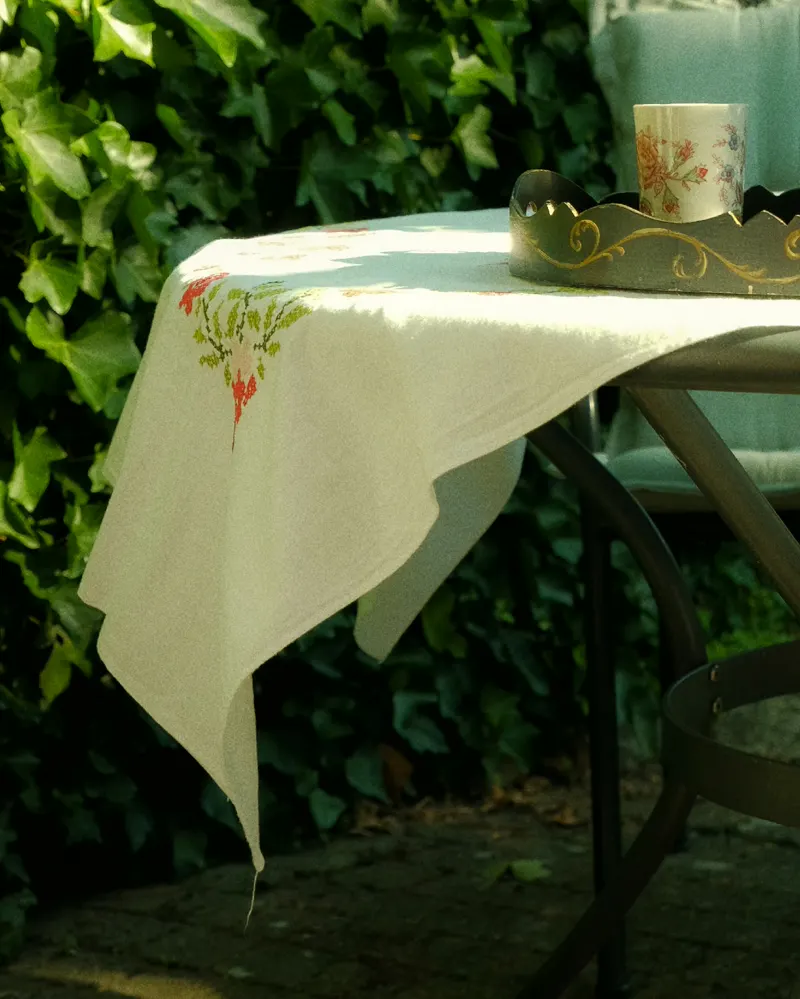
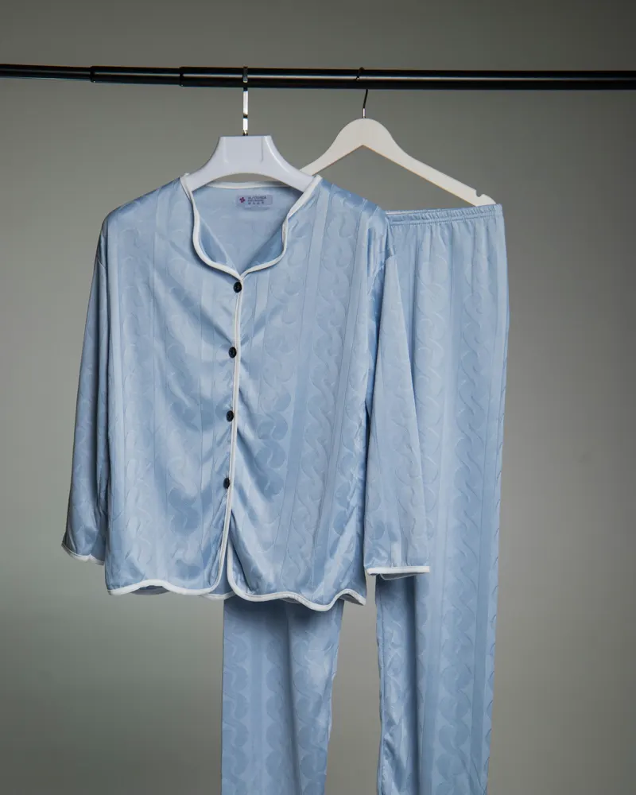
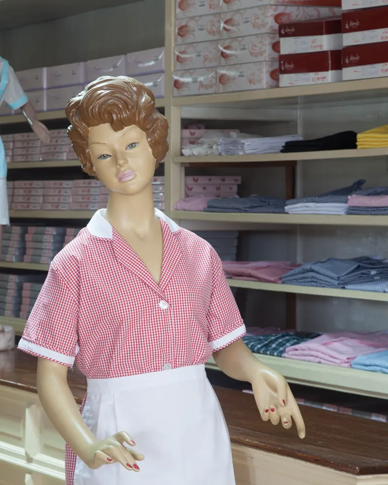
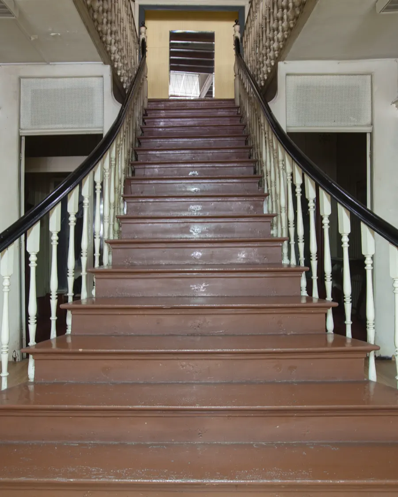
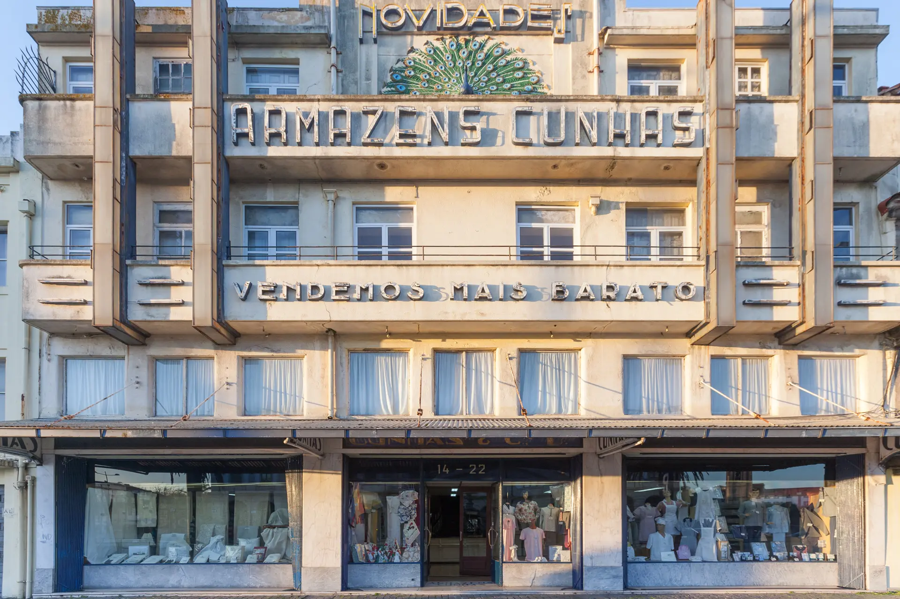

Colchas e cobertores
Colchas lavradas e cobertores para o inverno.


Desde 1898Colchas, toalhas, cobertores, pijamas e batas, escolhidos ao balcão, na Baixa do Porto.

Colchas lavradas e cobertores para o inverno.

Jogos de lençóis e de toalhas para todos os dias.

Para a mesa de todos os dias e a de festa.

Para senhora e homem, e roupões para casa.

Batas brancas, fardas e batas escolares.

Sempre na mesma família, a casa mantém o mobiliário original: os balcões, as prateleiras e a escadaria. Aqui escolhe-se com calma, ao balcão.
Loja Porto de Tradição